1040B36 rear fuel delivery line - r r
- Path
- Procedures > 10 ENGINE > 1040 FUEL TANK AND PIPES > 1040B fuel supply/return circuit pipe > 1040B36 rear fuel delivery line - r r
- Kind
- repair procedure (removal / refitting; the operation number is the code)
- Applies to
- engines: 3.2 V6, 1.9 JTD 16V; all production periods
- Interactive page
- https://sloeber94.github.io/elrnDB-a147/en/#/3024972
Applies to: engines: 3.2 V6; all production periods
 Removing
Removing
 Refitting
RefittingPosition the vehicle on the ramp.
1. Loosen the band (1a) and disconnect the oil vapour recirculation pipe (1b) from the corrugated hose.
2. Loosen the bands (2a) and remove the corrugated hose (2b), complete with resonator (2c).
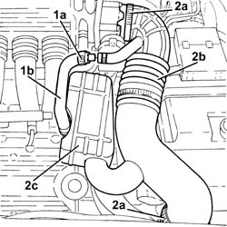
Applies to: engines: 3.2 V6; all production periods
Proceed with removal 1008C10 power unit upper reaction link r r .
Proceed with removal 1008C16 body link bracket - r r .
Discharge the fuel system pressure with the tool connected to the bleed valves on the fuel pipe.
 | Name | Country |
|---|---|---|
- | Rapid connector | 1.870.684.000 |
1. Disconnect the rapid attachment for the rear fuel supply pipe to the front pipe.
2. Disengage the rear fuel delivery pipe from the fastenings on the engine compartment bulkhead.
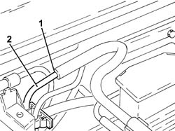
Applies to: engines: 3.2 V6; all production periods
1. Undo the bolts (1a) and remove the protections (1b) for the fuel outlet pipes and fuel vapour recovery pipes.
2. Release the rear fuel supply pipe (2a) from the underbody fastenings (2b).
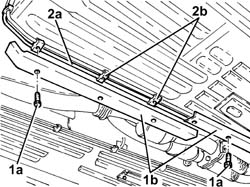
Applies to: engines: 3.2 V6; all production periods
Working from inside the vehicle, fold down the rear seat cushion and move the soundproofing trim.
1. Undo the bolts (1a) and remove the access cover (1b) to the immersed pump assembly complete with gauge.
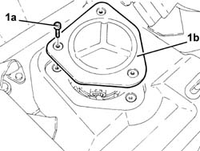
Applies to: engines: 3.2 V6; all production periods
1. Disconnect the rapid attachment for the rear fuel supply pipe from the immersed pump assembly complete with gauge.
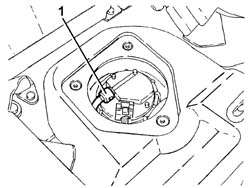
Applies to: engines: 3.2 V6; all production periods
1. Position a hydraulic jack under the rear suspension crossmember.
2. Undo the bolts (2a) and lower the rear suspension crossmember (2b), as necessary, using the hydraulic jack.
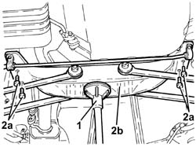
Applies to: engines: 3.2 V6; all production periods
1. Position a hydraulic jack under the fuel tank.
2. Undo the bolts (2a) and the nuts (2b) fixing the fuel tank to the bodyshell.
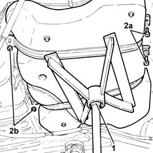
Applies to: engines: 3.2 V6; all production periods
1. Undo the bolts securing the heat shield near the fuel tank.
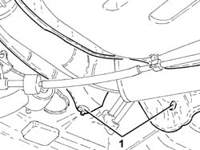
Applies to: engines: 3.2 V6; all production periods
Lower the fuel tank as necessary using the hydraulic jack.
Remove the front fuel supply pipe
Applies to: engines: 3.2 V6; all production periods
Refitting
RemovingRefit the rear fuel delivery pipe in its seat and secure it to the underbody fastenings.
Place the fuel tank back in its housing using the hydraulic jack.
Tighten the bolts securing the heat shield near the fuel tank.
Tighten the bolts and the nuts securing the fuel tank to the body.
Remove the hydraulic jack from under the fuel tank.
1. Replace the rear suspension crossmeber (1a) in its housing using the hydraulic jack (1b) and fix it tightening the bolts (1c) to the recommended torque.
 | Fastening | Component | Ø | Value (daNm) |
|---|---|---|---|---|
1c | Bolt | REAR CROSS-BEAM | M10 | (Bodyshell side) 5.8 ÷ 7.2 |
Remove the hydraulic jack from under the rear suspension crossmember.
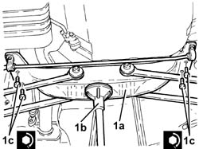
Applies to: engines: 3.2 V6; all production periods
Connect the rapid attachment for the rear fuel supply pipe to the immersed pump assembly complete with gauge.
Fit the access cover to the submerged pump assembly complete with gauge and secure it using the nuts.
Refit the soundproofing trim.
Refit the rear seat cushion.
Refit the protections for the fuel outlet hose and fuel vapour recovery hose and secure with bolts.
Secure the fuel supply pipe to the fastenings on the engine compartment bulkhead.
Connect the seal for the rear fuel supply pipe to the front pipe.
Proceed with refitting 1008C16 body link bracket - r r .
Proceed with refitting 1008C10 power unit upper reaction link r r .
Place the corrugated hose, complete with resonator, back in its housing and tighten the bands.
Connect the oil vapour recirculation pipe to the corrugated hose and tighten the band.
Remove the car from the ramps.
Applies to: engines: 1.9 JTD 16V; all production periods
Removing
RefittingPosition the vehicle on the ramp.
Working from inside the vehicle, fold down the rear seat cushion and move the soundproofing trim.
1. Undo the bolts (1a) and remove the access cover (1b) to the immersed pump assembly complete with gauge.
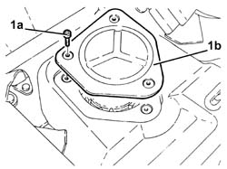
Applies to: engines: 1.9 JTD 16V; all production periods
1. Disconnect the rapid attachment for the rear fuel supply pipe from the immersed pump assembly complete with gauge.
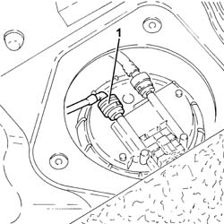
Applies to: engines: 1.9 JTD 16V; all production periods
1. Undo bolts (1a) and remove protection (1b).
2. Disconnect the rapid attachment for the rear fuel supply pipe, front fuel supply pipe side.
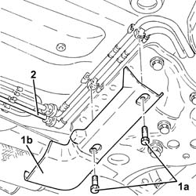
Applies to: engines: 1.9 JTD 16V; all production periods
1. Release the rear fuel supply pipe from the underbody fastenings and remove it.
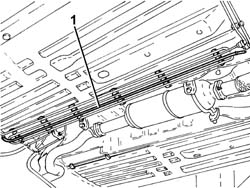
Applies to: engines: 1.9 JTD 16V; all production periods
Refitting
RemovingRefit the rear fuel delivery pipe in its seat and position it on the underbody fastenings.
Connect the rapid attachment for the rear fuel supply pipe, front fuel supply pipe side.
Place the protection back in its housing and secure it using the bolt.
Connect the rapid attachment for the rear fuel supply pipe to the immersed pump assembly complete with gauge.
Fit the access cover to the submerged pump assembly complete with gauge and secure it using the bolts.
Refit the soundproofing trim.
Refit the rear seat cushion.
Remove the car from the ramps.